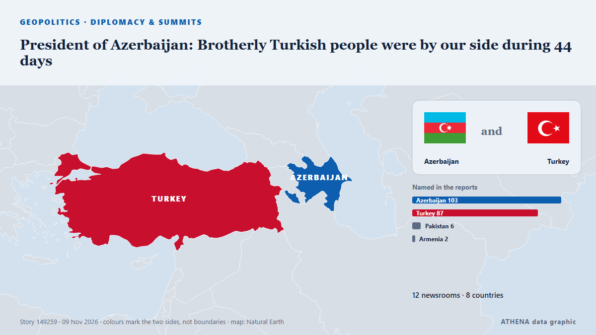

President of Azerbaijan: Brotherly Turkish people were by our side during 44 days

“The liberation of Shusha carried great symbolic meaning and was also one of the key parts of the Second Garabagh War,” President Ilham Aliyev said in a joint press statement with President of… από AzerNews
Αναφέρθηκε ανεξάρτητα από 12 μέσα σε 8 χώρες από τις 7 Νοε, πρώτο το Hürriyet Daily News· η κάλυψη εξασθενεί. Το ATHENA εκτιμά τον κίνδυνο μέτριο (2.8/10), κυρίως λόγω της σοβαρότητάς του και της τεκμηρίωσης. Βεβαιότητα 90% (υψηλή): το επιβεβαιώνουν 12 ανεξάρτητα μέσα, μέση αξιοπιστία 78%. Μέσα ανά χώρα: Αζερμπαϊτζάν (27), Τουρκία (8), Πακιστάν (1). Κάλυψη: 7 Νοε έως 8 Νοε, 35 ώρες.
Γιατί έχει σημασία: Οι εξελίξεις στην ασφάλεια και τη διπλωματία μπορούν να μετατοπίσουν συμμαχίες, εμπόριο και αγορές πολύ πέρα από τις χώρες που εμπλέκονται.
Τι άλλαξε: 5 νέες αναφορές από 3 μέσα στο 24ωρο έως 9 Νοε.
Πρώτη διατύπωση: Erdoğan appoints rectors to 11 universities
Οι τίτλοι των ειδήσεων παρουσιάζονται στα αγγλικά, όπως δημοσιεύτηκαν.
Πώς να διαβάσετε αυτή τη σελίδα
- Τι διαβάζετε
- 12 μέσα σε 8 χώρες ανέφεραν αυτό το γεγονός. Οι αναφορές παρακάτω εμφανίζονται με τη σειρά που δημοσιεύτηκαν· κάθε τίτλος ανοίγει το αρχικό άρθρο. Το ATHENA δεν γράφει δικά του ρεπορτάζ.
- Η εκτίμησή μας
- Για την καταγραφή — Οι αναφορές περιγράφουν ένα ολοκληρωμένο, εσωτερικό, εμπορικό ή προσωπικό ζήτημα. Το καταγράφουμε ώστε να βλέπετε ποιος το ανέφερε και πότε. Δεν παρακολουθούμε εδώ κίνδυνο ευρύτερης σύγκρουσης.
- Πόσα στοιχεία υπάρχουν
- Περιορισμένη Αντιμετωπίστε τη σελίδα ως πρώιμη αναφορά.
Αφού αφαιρεθούν οι επαναλήψεις, τα άσχετα και τα παλιά στοιχεία, υπολογίζονται 9 από τις 40 αναφορές που παρατίθενται· το 65% των τίτλων αντιστοιχεί στο γεγονός.
- Τι δεν σημαίνει
- Το ATHENA μετρά πώς καλύπτεται ένα γεγονός, όχι αν είναι αληθές. Δεν είναι πρόβλεψη, κρίση για το ποιος έχει δίκιο ή συμβουλή.
- Τι θα την άλλαζε
- Αναφορές από άλλα ανεξάρτητα μέσα που δείχνουν διαφορετική εξέλιξη, ή σαφής επιβεβαίωση ή διάψευση από επίσημη πηγή.
Εκτίμηση R2 · ανανεώνεται με κάθε ενημέρωση της σελίδας. Το ATHENA δεν έχει δημοσιεύσει ακόμη ιστορικό επιδόσεων για αυτές τις εκτιμήσεις· όταν το κάνει, θα συνδέεται εδώ.
Με μια ματιά
Επιλέγεται, βαθμολογείται και γράφεται από τη δημοσιευμένη μεθοδολογία του ATHENA. Κανένας συντάκτης δεν παρεμβαίνει σε μεμονωμένα γεγονότα. Πώς παράγεται ›
| 07 Nov 06:10 UTC | 1 |
|---|---|
| 07 Nov 09:10 UTC | 3 |
| 07 Nov 12:10 UTC | 1 |
| 07 Nov 15:10 UTC | 3 |
| 07 Nov 18:10 UTC | 0 |
| 07 Nov 21:10 UTC | 0 |
| 08 Nov 00:10 UTC | 0 |
| 08 Nov 03:10 UTC | 0 |
| 08 Nov 06:10 UTC | 7 |
| 08 Nov 09:10 UTC | 12 |
| 08 Nov 12:10 UTC | 11 |
| 08 Nov 15:10 UTC | 4 |
| 08 Nov 18:10 UTC | 0 |
| 08 Nov 21:10 UTC | 0 |
| 09 Nov 00:10 UTC | 0 |
| 09 Nov 03:10 UTC | 0 |
| 09 Nov 06:10 UTC | 0 |
| 09 Nov 09:10 UTC | 0 |
| 09 Nov 12:10 UTC | 1 |
| 07 Nov 09:32 UTC | 0.0 |
|---|---|
| 07 Nov 13:36 UTC | 1.1 |
| 08 Nov 13:47 UTC | 3.5 |
| 09 Nov 14:25 UTC | 2.8 |
Γιατί αυτοί οι αριθμοί
Σημασία
Κίνδυνος
Βεβαιότητα
Η κάλυψη — ποιος το ανέφερε και πότε
ο τίτλος όπως δημοσιεύτηκε · ανοίγει το πρωτότυπο- Hürriyet Daily News · ΤουρκίαErdoğan appoints rectors to 11 universities
- APA (English) · ΑζερμπαϊτζάνPresident Ilham Aliyev signs order awarding senior military ranks to servicemen of Azerbaijan's Defense Ministry
- APA (English) · ΑζερμπαϊτζάνPresident of Türkiye Recep Tayyip Erdoğan congratulates President Ilham Aliyev on Victory Day
- AzerNews · ΑζερμπαϊτζάνRecep Tayyip Erdoğan congratulates President Ilham Aliyev on Victory Day
- AzerNews · ΑζερμπαϊτζάνPresident Ilham Aliyev promotes Azerbaijani military officers to higher ranks
- AzerNews · ΑζερμπαϊτζάνPakistan's PM congratulates President Aliyev on Victory Day, calls for stronger strategic partnership
- APA (English) · ΑζερμπαϊτζάνPresident Ilham Aliyev’s social media accounts shared footage from the Patriotic War
- Anadolu Agency (English) · ΤουρκίαTurkish president to visit Karabakh on Sunday for Azerbaijan's Victory Day
- AzerNews · ΑζερμπαϊτζάνAzerbaijan's Victory Day symbolizes national unity and resolve – Foreign Ministry
- AzerNews · ΑζερμπαϊτζάνPresident Ilham Aliyev addresses nation on occasion of November 8 - Victory Day
- APP (Associated Press of Pakistan) · ΠακιστάνPM felicitates President Aliyev, Azerbaijan nation on Victory Day
- APA (English) · ΑζερμπαϊτζάνTurkish President Recep Tayyip Erdogan departs for Azerbaijan
- Anadolu Agency (English) · ΤουρκίαTurkish President Erdogan arrives in Azerbaijan for Victory Day celebrations
- AzerNews · ΑζερμπαϊτζάνTürkiye congratulates Azerbaijan on Victory Day
- APA (English) · ΑζερμπαϊτζάνTurkish President Recep Tayyip Erdogan arrives in Azerbaijan on official visit-PHOTO
- AzerNews · ΑζερμπαϊτζάνTurkish President Recep Tayyip Erdoğan arrives in Azerbaijan on official visit
- TRT World · ΤουρκίαAliyev welcomes Erdogan at airport in Azerbaijan for Victory Day celebrations
- Aravot (English) · ΑρμενίαTurkish Foreign Ministry congratulates Azerbaijan
- AzerNews · ΑζερμπαϊτζάνOfficial welcome ceremony held for Turkish President Recep Tayyip Erdoğan in Shusha
- APA (English) · ΑζερμπαϊτζάνTurkish President congratulates Azerbaijan on Victory Day
- AzerNews · ΑζερμπαϊτζάνPresident Ilham Aliyev held one-on-one meeting with President of Türkiye in Shusha
- AzerNews · ΑζερμπαϊτζάνFootage about Turkish President's visit to Azerbaijan posted on President Ilham Aliyev's social media
- Anadolu Agency (English) · ΤουρκίαTurkish president congratulates Azerbaijan on 6th anniversary of Karabakh victory
- Oman Observer · ΟμάνTürkiye, Azerbaijan leaders vow unity, bolster ties
- APA (English) · ΑζερμπαϊτζάνPresident Ilham Aliyev to Erdogan : Your presence with us on Victory Day brings joy to entire Azerbaijani people
- Free Malaysia Today · ΜαλαισίαErdogan visits Azerbaijan in bid to ease rift between allies
- APA (English) · ΑζερμπαϊτζάνPresident of Azerbaijan: Brotherly Turkish people were by our side during 44 days
- AzerNews · ΑζερμπαϊτζάνPresident of Azerbaijan: Brotherly Turkish people were by our side during 44 days
- AzerNews · ΑζερμπαϊτζάνPresident: I hope the normalization process between Armenia and Azerbaijan will yield concrete results
- Hürriyet Daily News · ΤουρκίαErdoğan, Aliyev reaffirm ‘unshakable’ ties in Karabakh visit
- AzerNews · ΑζερμπαϊτζάνPresidents Ilham Aliyev and Recep Tayyip Erdoğan posed for photographs in front of Shusha Fortress
- Türkiye Today · ΤουρκίαErdogan joins Aliyev in Karabakh on 6th anniversary of Victory Day
- AzerNews · ΑζερμπαϊτζάνPresidents of Azerbaijan and Türkiye visited Khojaly Genocide Memorial
- AzerNews · ΑζερμπαϊτζάνPresidents of Azerbaijan and Türkiye laid wreaths at Victory Monument in Khankendi
- APA (English) · ΑζερμπαϊτζάνErdogan shares post marking sixth anniversary of Karabakh Victory
- Türkiye Today · ΤουρκίαPresident Erdogan, Aliyev declare alliance ‘unshakable’ in Shusha
- AzerNews · ΑζερμπαϊτζάνRecep Tayyip Erdoğan congratulates Azerbaijan on sixth anniversary of Victory Day
- AzerNews · ΑζερμπαϊτζάνFootage of the meeting with Erdoğan in Shusha posted on President Ilham Aliyev’s social media pages
- Euronews English · ΓαλλίαErdoğan joins Aliyev for Azerbaijan’s Victory Day in Karabakh
- AzerNews · ΑζερμπαϊτζάνPresident of Türkiye Recep Tayyip Erdoğan concluded official visit to Azerbaijan